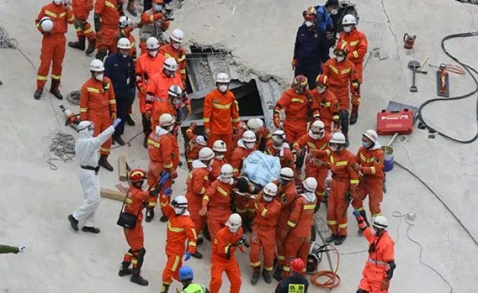

泉州酒店坍塌事故：频频掉玻璃渣的酒店为何成为隔离点？
原文链接 备份链接 废墟之上那些只有通透却不能承重的玻璃幕墙，对于那些前来隔离的人们来说，危险已埋伏在墙内。这栋楼的钢结构标准，根本不匹配将来让它运营一家酒店。 记者 | 吴 雪 泉州欣佳酒店坍塌事故发生后的第18个小时，新闻发布会通报最 …
澎湃新闻记者 钟煜豪
福建泉州鲤城区欣佳酒店楼体坍塌事故发生后，多地紧急展开隔离点安全隐患排查。
据湖北省应急管理厅官网消息，3月7日19时15分，福建泉州市鲤城区常泰街道南环路欣佳快捷酒店发生坍塌事故，为深刻吸取福建泉州一宾馆倒塌事故教训，荆州市应急管理局在事故发生后一小时进行了安排部署，要求各县市区安委会，立即对全市各隔离酒店、医院等场所进行拉网式大排查。
消息称，石首市委市政府接到通知后，高度重视，第一时间响应，立即成立由应急、住建、消防、卫建等部门组成的工作专班联合各乡镇办区连夜对全市74家隔离酒店、18家医院进行清单式安全隐患大排查，重点突出房屋主体结构和消防安全，要求负责人现场提供建筑物构造原始图纸，如实汇报建筑物改造和改扩建情况，各检查组清单式检查了消防通道和消防器材，督促酒店、医院落实安全管理责任，举一反三，强化安全隐患排查治理，确保人民群众生命和财产安全。
此次大排查共检查各类隐患57条，要求企业现场整改51条，对不能的6条隐患分别由相关部门指导限期整改，并将适时组织“回头看”，确保隐患全部整改到位。
另据三峡西陵网消息，3月8日，湖北宜昌西陵区委常委、区政府常务副区长何良平带队，区应急管理局、区住建局、区卫健局、区城管局、区民政局、区商务局、西陵消防救援大队和属地街办负责人参加，对晚霞老年公寓、清馨老年公寓、馨岛酒店等8家辖区疫情临时集中隔离单位的防疫措施、消防安全和工程安全等防范重点进行了拉网式的排查。
消息称，结合当前疫情防控工作实际和刚刚发生的福建泉州酒店坍塌事故，检查组一行逐一查看了人员进出入管理、体温检测、应急救援预案和消防日常管控工作落实情况，对消防控制室、消防通道、房屋装修改造等高风险部位开展了重点检查。针对检查中发现的火灾报警控制器未按要求调整为自动模式、常闭式防火门未按要求关闭和消防值守人员临时离岗等问题，检查组当场要求单位主要负责人立即整改，并责令其结合本次检查，进一步开展安全隐患自查自纠，进一步加强人员安全教育，进一步加强日常巡查，确保辖区安全稳定。
同在3月8日，广东省委常委、广州市委书记、市防控新冠肺炎疫情工作领导小组组长张硕辅到广州白云国际机场和天河区隔离酒店检查督导疫情防控工作。
据南方网消息，在天河区的指定隔离酒店，张硕辅提出，要立即对所有密切接触者和重点人群集中隔离场所进行拉网式安全大检查，发现问题要迅速转移有关人员，并举一反三整改到位，坚决保障人民群众生命安全。
另据大众网消息，为深入贯彻落实上级关于疫情防控指示精神，深刻吸取外地酒店隔离点楼体倒塌事故教训，切实保障隔离点安全，3月8日上午，青岛市市南区应急管理局聘请专家，组成安全联合检查组，对市南辖区三处隔离点开展建筑结构安全评估检查。
消息称，在安全评估检查过程中，联合检查组首先听取了酒店隔离点负责人就应急预案、消防安全管理及联动防控等情况汇报，随后专家就高处坠落、坍塌、机械伤害、触电、物体打击及火灾等事故隐患进行了重点检查，对存在的问题提出了明确整改意见。
同样排查出问题的还有广东佛山。
据微信公号“佛山应急管理”消息，3月7日，福建省泉州市新冠肺炎疫情隔离观察点之一欣佳快捷酒店发生坍塌。3月8日市安委办、市应急管理局贯彻落实省、市领导指示精神，迅速启动全国“一盘棋”应急响应机制，下发《佛山市安全生产委员会办公室 佛山市应急管理局关于切实吸取福建泉州“3·7”酒店坍塌事故教训立即组织开展集中隔离观察点安全检查的紧急通知》，要求各区、各有关部门要分级分类迅速对全市80个集中隔离观察点开展一次全覆盖安全检查，防范化解潜在安全风险，及时消除事故隐患，坚决遏制类似事故发生。
3月8日上午，佛山市安委办主任、市应急管理局局长魏钰带队到佛山市第四人民医院， 对该院扩建工程（临时）项目进行安全检查，针对房屋建筑安全、消防安全、卫生防疫及公共安全等相关措施指出了存在的安全隐患，并要求各有关部门逐一跟踪，指导市第四人民医院落实整改。

据泉州网此前消息，3月7日19:05，鲤城区常泰街道南环路欣佳酒店发生楼体坍塌。此前报道《酒店坍塌瞬间画面曝光！国家级医疗组赶赴当地》
初步了解，该坍塌建筑建设于2013年，占地约5亩，主体7层，每层1000平方米，楼高22米，为钢结构建筑物。2018年改造为欣佳酒店，并于当年6月开业，酒店有各类客房共计66间。
新冠肺炎疫情发生后，欣佳酒店被作为集中医学观察点，用以对来自重点疫区或有相关旅居史的人员，进行集中医学观察。事发当时，欣佳酒店集中医学观察点共入住重点疫区或有相关旅居史的人员58人，经过核酸检测均为阴性。此外，欣佳酒店还有管理、服务等人员16人，另有租在该栋大楼的车行人员6人。
@应急管理部 消息称，截至3月8日16时，已救出48人（其中10人死亡，38人送医治疗），正在搜救的还有23人。
另据新华社3月8日报道，记者从泉州市有关方面了解到，上述坍塌事故系房屋改装作业时发生，该楼房业主目前已被公安部门控制。该建筑一楼共有6间，其中两间原为超市。今年春节前，房屋业主将一楼出租的超市收回重新改装。3月7日晚上7时，房主接到现场施工人员电话称，在进行作业的一楼房屋一根柱子发生变形。三四分钟后，楼体整体坍塌。
戳这里进入
“全国新型冠状病毒感染病例实时地图”↓↓↓
本期编辑 周玉华
推荐阅读


原文链接 备份链接 废墟之上那些只有通透却不能承重的玻璃幕墙，对于那些前来隔离的人们来说，危险已埋伏在墙内。这栋楼的钢结构标准，根本不匹配将来让它运营一家酒店。 记者 | 吴 雪 泉州欣佳酒店坍塌事故发生后的第18个小时，新闻发布会通报最 …
原文链接 备份链接 酒店在装修期间，就曾引发同楼商户对承重能力的担忧。“在酒店装修的那两三个月，因为压力问题，我们一楼商户的门窗玻璃被挤压炸裂五六块，后来觉得房子太危险，我就搬走了。” 记者 | 吴 雪 3月7日，随着莆田、漳州两市11名 …
原文链接 备份链接 在疫情防控期间，各地酒店纷纷关门，开业不久却两次被行政处罚的泉州欣佳酒店何以能成为疫情防控的集中隔离点？该酒店自2017年就在大楼内多次进行改装，相关手续是否齐全？及时回应这些疑点，有利于缓解公众的担忧 文 |《财经》 …
原文链接 备份链接 3月7日19:30左右，福建省泉州市鲤城区欣佳酒店发生楼体坍塌。 房屋倒塌瞬间视频曝光 事发后楼内受困71人，另有9人自救逃生 泉州市政府官方网站8日发文称，3月7日19时许，鲤城区欣佳酒店发生楼体坍塌事故。经过摸排， …
原文链接 备份链接 记者/曹慧茹 李佳楠 佟晓宇 李东 实习记者/周缦卿 编辑/ 石爱华 宋建华 泉州一七层建筑整体坍塌 3月7日19时15分，泉州市鲤城区一栋大楼发生整体坍塌事故，事故现场共有71人被困（不含自救逃生的9人）。截至3月8 …